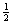
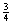
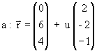
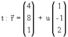
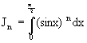

| KANTONSSCHULE REUSSBÜHL | Maturitätsprüfungen 1999 |
M a t h e m a t i k Typus C
Bemerkungen: Jede Aufgabe soll auf einer neuen Seite begonnen werden.
Zeit: Drei Stunden.
Jede vollständig gelöste Aufgabe wird mit maximal 10 Punkten bewertet.
Für 40 Punkte wird die Note 6 erteilt.
1. Analysis
Eine Kurvenschar mit Scharparameter t > 0 wird beschrieben durch
x → y = ft (x) = (x - t) ln x
a) Skizziere die Kurven (Einheit 2 cm) für die Parameter t = 1, t = 2 und t =  .
b) Welchen Flächeninhalt schliessen die vertikale Asymptote, die x-Achse und die Kurve für t = 1 ein ?
c) Bestimme die Fläche, welche die Kurve y = ft (x) mit der x-Achse einschliesst, in Abhängigkeit von t.
d) Für welches t wird diese Fläche extremal? Von welcher Art ist das Extremum ?
e) Jede Kurve der Schar weist ein Minimum Mt (xM, yM)
auf. Auf welcher Kurve variieren diese Minima Mt ?
(Hinweis: xM muss nicht explizit berechnet werden)
2. Wahrscheinlichkeitsrechnung
Ein Spiel gegen den Computer endet mit einem Sieg, einem Unentschieden oder einer Niederlage.
a) Für den Spieler A ist die Wahrscheinlichkeit, dieses Spiel zu gewinnen, dreimal so gross wie die Wahrscheinlichkeit, das Spiel zu verlieren. Die Wahrscheinlichkeit für ein unentschieden ist doppelt so gross wie diejenige für eine Niederlage. Wie gross sind diese Wahrscheinlichkeiten ?
b) Wie gross ist für den Spieler A die Wahrscheinlichkeit, in seinem Spiel vier mal hintereinander mit dem gleichen Ergebnis abzuschneiden ?
c) Der Spieler B spielt zweimal. Die Wahrscheinlichkeit, dass für ihn dabei je ein Sieg und eine Niederlage herausschauen, ist dreimal grösser als die Wahrscheinlichkeit, dass er dabei zwei Siege erzielt. Die Wahrscheinlichkeit, dass bei diesen zwei Spielen mindestens ein mal ein Unentschieden resultiert, beträgt 75 %. Wie gross ist die Wahrscheinlichkeit, dass B in diesen beiden Spielen keine Niederlage hinnehmen muss ?
d) Für Spieler C beträgt die Gewinnwahrscheinlichkeit bei jedem Spiel p, die Wahrscheinlichkeit, nicht zu gewinnen, jedoch p2. C spielt nun fünf mal hintereinander. Wie gross ist die Wahrscheinlichkeit, mindestens drei Siege zu erringen ?
e) X sei die Anzahl der Siege des Computers bei fünf nacheinander ausgetragenen
Spielen, die Gewinnwahrscheinlichkeit des Computers ist bei jedem Spiel .
Bestimme die Wahrscheinlichkeitsverteilung und den Erwartungswert.
3. Vektorgeometrie
Von einem Kreiszylinder sind die Achse  und eine Tangente  bekannt.
a) Bestimme den Winkel, den die Achse mit der x-y-Ebene bildet.
b) Die Tangente berühre den Zylinder im Punkt B; suche diesen Berührungspunkt sowie den Radius R des Zylinders.
c) Berechne die Gleichung der Zylinderfläche. (Falls unter b) der Radius nicht gefunden werden konnte, verwende im Folgenden R = 3)
d) Eine Normalebene zur Zylinderachse in M (0 / 6 / 4) und die x-y-Ebene begrenzen
zusammen mit der Zylinderfläche einen schiefabgeschnittenen Zylinderkörper.
Welches ist die Gleichung jener Geraden, auf der die längste Mantellinie des Körpers
liegt?
4. Komplexe Zahlen
Eine komplexe Funktion ist gegeben durch z → w = f(z) = 
a) Suche die Fixpunkte der Abbildung f.
b) Bestimme den Realteil von w und zeige: Ist x = Re(z) > 0, so ist auch u = Re(w) > 0.
Eine zugehörige komplexe Folge hat den Startwert z1 = 0 und genügt der Rekursion zn+1 = f(zn) .
c) Berechne die Folgenglieder z2 und z3 .
d) Zeige: Die Fixpunkte und die Folgenglieder z1, z2 und z3
liegen auf einem Kreis.
Stelle Kreis und Zahlen in der Gaussebene dar.
Begründe: Alle Glieder der Folge liegen auf diesem Kreis.
e) Die Folge konvergiert gegen einen Grenzwert bzw. Grenzpunkt. Gib diesen an.
(Die Konvergenz ist nicht zu beweisen)
5. Kurzaufgaben
a) Gegeben ist eine Ursprungsaffinität α, welche den Punkt A(4/1) fest lässt und P(10/1) auf den Punkt P‘(1/10) abbildet. Berechne die Abbildungsgleichungen von α und ihre Fixpunkte und beschreibe den Typus dieser Affinität.
b) Gegeben ist das Integral  .
Forme Jn durch partielle Integration um und zeige damit die Richtigkeit der
Rekursionsformel Jn =  Jn-2 ; berechne schliesslich mit Hilfe dieser
Rekursionsformel die Werte für J2, J3, J4 und J5
aus den Werten J0 und J1 exakt.
Jn-2 ; berechne schliesslich mit Hilfe dieser
Rekursionsformel die Werte für J2, J3, J4 und J5
aus den Werten J0 und J1 exakt.